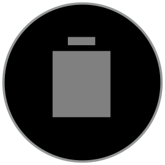
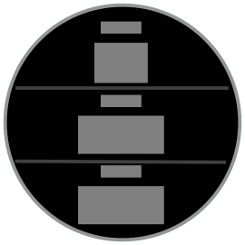

Data Fields
Garmin activities typically present the user with a page loop of data field pages. In the activity settings, the user can subdivide the page using a pre-defined set of data field layouts. In each subdivision, the user can assign a data field that displays a metric relevant to the activity.
Custom data fields allow developers to extend the Garmin workout experience. Your data field can compute new metrics, read data from sensors over ANT or Bluetooth Low Energy, show alerts, and record information to Garmin Connect.
Handling direct user input is reserved for the activity experience itself. The inputs for your data field should come from the activity, sensors or the configuration.
Data Field Layouts
When designing your data field, you cannot assume the user will choose to give your data field a full-screen presentation. Some users like having multiple pages with one or two data fields, while others will fill their data pages full of information. Your data field should support visually filling a full page, while also providing a summarized view if placed in a smaller presentation.
Example
One field layout:
Two field layout:
Three field layout:
Four field layout:

Obscurity
Based on where the user places your data field on a page, part of the visual area may be obscured by the curvature of the screen. This could reduce your visual area for labels or other elements of your design. Connect IQ will communicate if the top, left, right or bottom of your visual area is obscured by the curvature. Based on this, you can rearrange your visual layout to adapt to the placement, for example by moving labels to the bottom to give them the most visual area.
Settings
Data fields are not allowed to take direct user input, but the user can configure them using mobile and on-device settings. Mobile settings let the user modify a set of app properties. Your app will be notified when they change.
On System 4 and above devices, Connect IQ data fields can have a launchable configuration flow built into the watch face. Data field settings are available from the Connect IQ Settings menu item in the activity settings menu. From within the settings, flow you can push and pop views to enable configuration.
Alerts
Because data fields are placed in a page loop, they are not guaranteed to be visible during a workout. If you want to alert the user to an event, you can push a full-page alert to the screen. The alert is dismissible or will auto-dismiss after a period of time.
By default, alerts for a data field are disabled. The user needs to go to the activity Settings -> Alerts -> Connect IQ and select the app they wish to enable alerts for.
Recording Information to Garmin Connect
Data fields can define and record up to 16 metrics in an activity file. These metrics can be recorded up to once a second as part of the activity, as part of the lap information or as part of the summary information. If the information is recorded as part of an activity, it can be displayed as an area chart in Garmin Connect. In addition to the data, you also have control over the translatable label, the translatable metric name and the color of the area chart.
Best Practices
If your data field shows a single metric, implementing a SimpleDataField will handle all the labeling and layout logic for you.
Use the on-device settings flow for authentication, pairing with wireless sensors and configuration flows.
For recorded data, choose a color that matches your brand but works with the color schemes of Garmin Connect activities in both web and mobile.